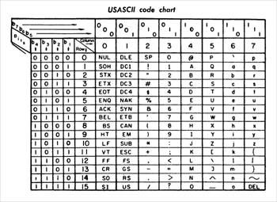
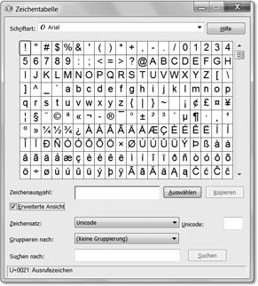

4 Der Umgang mit Zeichenketten
»Ohne Unterschied macht Gleichheit keinen Spaß.«
– Dieter Hildebrandt (*1927)

4.1 Von ASCII über ISO-8859-1 zu Unicode
Die Übertragung von Daten spielte in der IT schon immer eine zentrale Rolle. Daher haben sich unterschiedliche Standards herausgebildet. Sie sind Gegenstand der nächsten Abschnitte.
4.1.1 ASCII
Um Dokumente austauschen zu können, führte die American Standards Association im Jahr 1963 eine 7-Bit-Kodierung ein, die ASCII (von American Standard Code for Information Interchange) genannt wird. ASCII gibt jedem der 128 Zeichen (mehr Zeichen passen in 7 Bit nicht hinein) eine eindeutige Position, die Codepoint (Codeposition) genannt wird. Es gibt 94 druckbare Zeichen (Buchstaben, Ziffern, Interpunktionszeichen), 33 nicht druckbare Kontrollzeichen (etwa den Tabulator und viele andere Zeichen, die bei Fernschreibern nützlich waren, aber heute uninteressant sind), und das Leerzeichen, das nicht als Kontrollzeichen gezählt wird. Am Anfang des ASCII-Alphabets stehen an den Positionen 0–31 Kontrollzeichen, an Stelle 32 folgt das Leerzeichen, und anschließend kommen alle druckbaren Zeichen. An der letzten Position, 127, wird ASCII von einem Kontrollzeichen abgeschlossen.
Die folgende Tabelle stammt aus dem Originalstandard von 1968 und gibt einen Überblick über die Position der Zeichen.
Abbildung 4.1: ASCII-Tabelle
4.1.2 ISO/IEC 8859-1
An dem ASCII-Standard gab es zwischendurch Aktualisierungen, sodass einige Kontrollzeichen entfernt wurden, doch in 7 Bit konnten nie alle länderspezifischen Zeichen untergebracht werden. Wir in Deutschland haben Umlaute, die Russen haben ein kyrillisches Alphabet, die Griechen Alpha und Beta und so weiter. Die Lösung war, statt einer 7-Bit-Kodierung, die 128 Zeichen unterbringen kann, einfach 8 Bit zu nehmen, womit 256 Zeichen kodiert werden können. Da in weiten Teilen der Welt das lateinische Alphabet genutzt wird, sollte diese Kodierung natürlich alle die Buchstaben zusammen mit einem Großteil aller diakritischen Zeichen (das sind etwa ü, á, à, ó, â, Å, Æ) umfassen. So setzte sich ein Standardisierungsgremium zusammen und schuf 1985 den ISO/IEC 8859-1-Standard, der 191 Zeichen beschreibt. Die Zeichen aus dem ASCII-Alphabet behalten ihre Positionen. Wegen der lateinischen Buchstaben hat sich die informelle Bezeichnung Latin-1 als Alternative zu ISO/IEC 8859-1 etabliert.
Alle Zeichen aus ISO/IEC 8859-1 sind druckbar, sodass alle Kontrollzeichen – etwa der Tabulator oder das Zeilenumbruchzeichen – nicht dazu gehören. Von den 256 möglichen Positionen bleiben 65 Stellen frei. Das sind die Stellen 0 bis 31 sowie 127 von den ASCII-Kontrollzeichen und zusätzlich 128 bis 159.
ISO 8859-1
Da es kaum sinnvoll ist, den Platz zu vergeuden, gibt es eine Erweiterung des ISO/IEC 8859-1-Standards, die unter dem Namen ISO 8859-1 (also ohne IEC) geläufig ist. ISO 8859-1 enthält alle Zeichen aus ISO/IEC 8859-1 sowie die Kontrollzeichen aus dem ASCII-Standard an den Positionen 0–31 und 127. Somit steckt ASCII vollständig in ISO 8859-1, aber nur die druckbaren ASCII-Zeichen sind in ISO/IEC 8859-1. Auch die Stellen 128 bis 159 sind in ISO 8859-1 definiert, wobei es alles recht unbekannte Kontrollzeichen (wie Padding, Start einer Selektion, kein Umbruch) sind.
Windows-1252 *
Weil die Zeichen an der Stelle 128 bis 159 uninteressante Kontrollzeichen sind, belegt Windows sie mit Buchstaben und Interpunktionszeichen und nennt die Kodierung Windows-1252. An Stelle 128 liegt etwa das €-Zeichen, an 153 das ?-Symbol. Diese Neubelegung der Plätze 128 bis 159 hat sich mittlerweile auch in der Nicht-Windows-Welt etabliert, sodass das, was im Web als ISO-8859-1 deklariert ist, heute die Symbole aus den Codepoints 128 bis 159 enthalten kann und von Browsern so dargestellt wird.
4.1.3 Unicode
Obwohl Latin-1 für die »großen« Sprachen alle Zeichen mitbrachte, fehlen Details, wie Ő, ő, Ű, ű für das Ungarische, das komplette griechische Alphabet, die kyrillischen Buchstaben, chinesische und japanische Zeichen, mathematische Zeichen und vieles mehr. Um das Problem zu lösen, hat sich das Unicode-Konsortium gebildet, um jedes Zeichen der Welt zu kodieren und ihm einen eindeutigen Codepoint zu geben. Unicode enthält alle Zeichen aus ISO 8859-1, was die Konvertierung von Dokumenten vereinfacht. So behält zum Beispiel »A« den Codepoint 65 von ISO 8859-1, den der Buchstabe wiederum von ASCII erbt. Unicode ist aber viel mächtiger als ASCII oder Latin-1: Die letzte Version des Unicode-Standards 6 beschreibt über 100.000 Zeichen.
Wegen der vielen Zeichen ist es unpraktisch, diese dezimal anzugeben, sodass sich die hexadezimale Angabe durchgesetzt hat. Der Unicode-Standard nutzt das Präfix »U+«, gefolgt von Hexadezimalzahlen. Der Buchstabe »A« ist dann U+0041.
Unicode-Tabellen unter Windows *
Unter Windows legt Microsoft das nützliche Programm charmap.exe für eine Zeichentabelle bei, mit der jede Schriftart auf ihre installierten Zeichen untersucht werden kann. Praktischerweise zeigt die Zeichentabelle auch gleich die Position in der Unicode-Tabelle an.
Unter Erweiterte Ansicht lassen sich mit Gruppieren nach in einem neuen Dialog Unicode-Unterbereiche auswählen, wie etwa Währungszeichen oder unterschiedliche Sprachen. Im Unterbereich Latin finden sich zum Beispiel die Zeichen aus der französischen Schrift (etwa »Ç« mit Cedille unter 00c7) und der spanischen Schrift (»ñ« mit Tilde unter 00F1), und bei Allg. Interpunktionszeichen findet sich das umgedrehte (invertierte) Fragezeichen bei 00BF.
Abbildung 4.2: Zeichentabelle unter Windows Vista
Anzeige der Unicode-Zeichen *
Die Darstellung der Zeichen – besonders auf der Konsole – ist auf einigen Plattformen noch ein Problem. Die Unterstützung für die Standardzeichen des ASCII-Alphabets ist dabei weniger ein Problem als die Sonderzeichen, die der Unicode-Standard definiert. Ein Versuch, zum Beispiel den Smiley auf der Standardausgabe auszugeben, scheitert oft an der Fähigkeit des Terminals beziehungsweise der Shell. Hier ist eine spezielle Shell notwendig, die aber bei den meisten Systemen noch in der Entwicklung ist. Und auch bei grafischen Oberflächen ist die Integration noch mangelhaft. Es wird Aufgabe der Betriebssystementwickler bleiben, dies zu ändern.[111](Mit veränderten Dateiströmen lässt sich dies etwas in den Griff bekommen. So kann man beispielsweise mit einem speziellen OutputStream-Objekt eine Konvertierung für die Windows-NT-Shell vornehmen, sodass auch dort die Sonderzeichen erscheinen.)
| Hinweis |
|
Obwohl Java intern alle Zeichenfolgen in Unicode kodiert, ist es ungünstig, Klassennamen zu wählen, die Unicode-Zeichen enthalten. Einige Dateisysteme speichern die Namen im alten 8-Bit-ASCII-Zeichensatz ab, sodass Teile des Unicode-Zeichens verloren gehen. |
4.1.4 Unicode-Zeichenkodierung
Da es im aktuellen Unicode-Standard 6.0 mehr als 109.000 Zeichen gibt, werden zur Kodierung eines Zeichens 4 Byte beziehungsweise 32 Bit verwendet. Ein Dokument, das Unicode 5.1-Zeichen enthält, wird dann einen Speicherbedarf von 4 × »Anzahl der Zeichen« besitzen. Wenn die Zeichen auf diese Weise kodiert werden, sprechen wir von einer UTF-32-Kodierung.
Für die meisten Texte ist UTF-32 reine Verschwendung, denn besteht der Text aus nur einfachen ASCII-Zeichen, sind 3 Byte gleich 0. Gesucht ist eine Kodierung, die die allermeisten Texte kompakt kodieren kann, aber dennoch jedes der Unicode-5.1-Zeichen zulässt. Zwei Kodierungen sind üblich: UTF-8 und UTF-16. UTF-8 kodiert ein Zeichen entweder in 1, 2, 3 oder 4 Byte, UTF-16 in 2 Byte oder 4 Byte. Das folgende Beispiel[112](http://java.sun.com/developer/technicalArticles/Intl/Supplementary/) zeigt die Kodierung für die Buchstaben »A« und »ß«, für das chinesische Zeichen für Osten und für ein Zeichen aus dem Deseret, einem phonetischen Alphabet.
| Glyph | A | ß | 東 | 𐐀 |
| Unicode-Codepoint | U+0041 | U+00DF | U+6771 | U+10400 |
| UTF-32 | 00000041 | 000000DF | 00006771 | 00 01 04 00 |
| UTF-16 | 00 41 | 00 DF | 6771 | D801 DC00 |
| UTF-8 | 41 | C3 9F | E6 9D B1 | F0 90 90 80 |
Werden Texte ausgetauscht, sind diese üblicherweise UTF-8 kodiert. Bei Webseiten ist das ein guter Standard. UTF-16 ist für Dokumente seltener, wird aber häufiger als interne Textrepräsentation genutzt. So verwenden zum Beispiel die JVM und die .NET-Laufzeitumgebung intern UTF-16.
4.1.5 Escape-Sequenzen/Fluchtsymbole
Um spezielle Zeichen, etwa den Zeilenumbruch oder Tabulator, in einen String oder char setzen zu können, stehen Escape-Sequenzen[113](Nicht alle aus C stammenden Escape-Sequenzen finden sich auch in Java wieder. Es gibt kein '\a' (Alert), kein '\v' (vertikaler Tabulator) und kein '\?' (Fragezeichen).) zur Verfügung.
| Zeichen | Bedeutung |
| \b | Rückschritt (Backspace) |
| \n | Zeilenschaltung (Newline) |
| \f | Seitenumbruch (Formfeed) |
| \r | Wagenrücklauf (Carriage return) |
| \t | Horizontaler Tabulator |
| \" | Doppeltes Anführungszeichen |
| \' | Einfaches Anführungszeichen |
| \\ | Backslash |
| Beispiel |
|
Zeichenvariablen mit Initialwerten und Sonderzeichen: char theLetterA = 'a', String s = "Er fragte: \"Wer lispelt wie Katja Burkard?\""; |
4.1.6 Schreibweise für Unicode-Zeichen und Unicode-Escapes
Da ein Java-Compiler alle Eingaben als Unicode verarbeitet, kann er grundsätzlich Quellcode mit deutschen Umlauten, griechischen Symbolen und chinesischen Schriftzeichen verarbeiten. Allerdings ist es gut, zu überlegen, ob ein Programm direkt Unicode-Zeichen enthalten sollte, denn Editoren haben mit Unicode-Zeichen oft ihre Schwierigkeiten – genauso wie Dateisysteme.
Beliebige Unicode-Zeichen lassen sich für den Compiler über Unicode-Escapes schreiben. Im Quellcode steht dann \uxxxx, wobei x eine hexadezimale Ziffer ist – also 0...9, A...F (beziehungsweise a...f). Diese sechs ASCII-Zeichen, die das Unicode-Zeichen beschreiben, lassen sich in jedem ASCII-Texteditor schreiben, sodass kein Unicode-fähiger Editor nötig ist. Unicode-Zeichen für deutsche Sonderzeichen sind folgende:
| Zeichen | Unicode |
| Ä, ä | \u00c4, \u00e4 |
| Ö, ö | \u00d6, \u00f6 |
| Ü, ü | \u00dc, \u00fc |
| ß | \u00df |
| Beispiel |
|
Deklariere und initialisiere eine Variable π:
|
Statt der herkömmlichen Buchstaben und Ziffern kann natürlich alles gleich in der \u-Schreibweise in den Editor gehackt werden, doch das ist nur dann sinnvoll, wenn Quellcode versteckt werden soll. Beim Compiler kommt intern alles als Unicode-Zeichenstrom an, egal ob wir in eine Datei
\u0063\u006C\u0061\u0073\u0073\u0020\u0041\u0020\u007B\u007D
setzen oder
class A {}
Die Unicode-Escape-Sequenzen sind also an beliebiger Stelle erlaubt, aber wirklich nützlich ist das eher für Zeichenketten. Der beliebte Smiley J ist als Unicode unter \u263A (WHITE SMILING FACE) beziehungsweise unter \u2639 (WHITE FROWNING FACE) L definiert. Das Euro-Zeichen € ist unter \u20ac zu finden.
| Beispiel |
|
Zeige Pi und in einem GUI-Dialog einen Grinsemann: System.out.println( "Pi: \u03C0" ); // Pi: π |
Das Unicode-Zeichen \uffff ist nicht definiert und kann bei Zeichenketten als Ende-Symbol verwendet werden.
| Tipp |
|
Sofern sich die Sonderzeichen und Umlaute auf der Tastatur befinden, sollten keine Unicode-Kodierungen Verwendung finden. Der Autor von Quelltext sollte seine Leser nicht zwingen, eine Unicode-Tabelle zur Hand zu haben. Die Alternativdarstellung lohnt sich daher nur, wenn der Programmtext bewusst unleserlich gemacht werden soll. Bezeichner sollten in der Regel aber so gut wie immer in Englisch geschrieben werden, sodass höchstens Unicode-Escapes bei Zeichenketten vorkommen. |
Enkodierung vom Quellcode festlegen *
Enthält Quellcode Nicht-ASCII-Zeichnen (wie Umlaute), dann ist das natürlich gegenüber der \u-Schreibweise ein Nachteil, denn so spielt das Dateiformat eine große Rolle. Es kann passieren, dass Quellcode in einer Zeichenkodierung abgespeichert wurde (etwa UTF-8), aber ein anderer Rechner eine andere Zeichenkodierung nutzt (vielleicht Latin-1) und den Java-Quellcode nun einlesen möchte. Das kann ein Problem werden, denn standardmäßig liest der Compiler den Quellcode in der Kodierung ein, die er selbst hat, denn an einer Textdatei ist die Kodierung nicht abzulesen. Wenn der Quellcode in einem anderen Format ist, wird er unbeabsichtigt vom Compiler falsch in das interne Unicode-Format konvertiert. Um das Problem zu lösen, gibt es zwei Ansätze:
- Dem javac-Compiler kann mit dem Schalter -encoding die Kodierung mitgegeben werden, in der der Quellcode vorliegt. Liegt etwa der Quellcode in UTF-8 vor, ist aber auf dem System mit dem Compiler die Kodierung Latin-1 eingestellt, dann muss für den Compiler der Schalter -encoding UTF-8 gesetzt sein. Details dazu gibt es unter http://download.oracle.com/javase/7/docs/technotes/tools/windows/javac.html. Wenn allerdings unterschiedliche Dateien in unterschiedlichen Formaten vorliegen, dann hilft die globale Einstellung nichts.
- Das Kommandozeilenprogramm native2ascii konvertiert Texte von beliebigen Kodierungen in Latin-1 und setzt Zeichen, die nicht Latin-1 sind, in \u-Folgen um. Zu den Argumenten gibt es mehr Informationen unter http://download.oracle.com/javase/7/docs/technotes/tools/windows/native2ascii.html.
4.1.7 Unicode 4.0 und Java *
In den letzten Jahren hat sich der Unicode-Standard erweitert, und Java ist den Erweiterungen gefolgt. Die Java-Versionen von 1.0 bis 1.4 nutzen den Unicode-Standard 1.1 bis 3.0, der für jedes Zeichen 16 Bit reserviert. So legt Java jedes Zeichen in 2 Byte ab und ermöglicht die Kodierung von mehr als 65.000 Zeichen. Ab Java 5 ist der Unicode 4.0-Standard möglich, der 32 Bit für die Abbildung eines Zeichens nötig macht. Java 7 unterstützt Unicode 6.0. Die Entwickler haben allerdings beim Wechsel auf Unicode 4 für ein Java-Zeichen nicht die interne Länge angehoben, sondern es bleibt dabei, dass ein char 2 Byte groß ist. Das heißt aber auch, dass ein Zeichen, das größer als 65.536 ist, irgendwie anders kodiert werden muss. Dazu muss ein »großes« Unicode-Zeichen durch zwei char zusammengesetzt werden. Dieses Pärchen aus zwei 16-Bit-Zeichen wird Surrogate-Paar genannt. Sie bilden in der UTF-16-Kodierung ein Unicode 4.0-Zeichen. Diese Surrogate vergrößern den Bereich der Basic Multilingual Plane (BMP).
Unter Java 5 gab es an den String-Klassen einige Änderungen, sodass etwa eine Methode, die nach einem Zeichen sucht, nun nicht nur mit einem char parametrisiert ist, sondern auch mit int, und der Methode damit auch ein Surrogate-Paar übergeben werden kann. In diesem Buch spielt das aber keine Rolle, da Unicode-Zeichen aus dem höheren Bereichen, etwa für die phönizische Schrift, die im Unicode-Block U+10900 bis U+1091F liegt – also kurz hinter 65536, was durch 2 Byte abbildbar ist –, nur für eine ganz kleine Gruppe von Interessenten wichtig sind.
Ihr Kommentar
Wie hat Ihnen das <openbook> gefallen? Wir freuen uns immer über Ihre freundlichen und kritischen Rückmeldungen.
 Jetzt bestellen
Jetzt bestellen


{kind=link}
{kind=link}